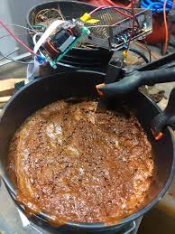

Forbidden chili

Description
This chili is disallowed. Do not make it. Do not eat it.
Ingredients
- ground turkey
- yellow onion
- canned diced tomatoes
- spices
- secrets
- fear
Steps
- cook the ground turkey in a pan
- drain out the fat from the ground turkey
- chop up the onion
- add the turkey, onion, tomatoes, and spices to a slow cooker
- cook on high heat for 3 hours
- if you made it this far, you are now a fugitive
- RUN